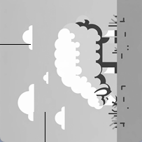
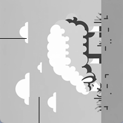

Introduction
Objective:
To demonstrate and analyze the process of image rotation as a linear transformation in R2 space, focusing on grayscale imagery.
Background:
This project investigates the mathematical concept of linear transformations, particularly rotation in a two-dimensional plane, and its practical application in image processing.
Concept and Implementation
Theory:
The project is centered around the rotation matrix, a linear transformation used for rotating vectors in a plane. Defined using sine (\(\sin\)) and cosine (\(\cos\)) functions, the matrix is pivotal for determining new coordinates after rotation, where \(\theta\) is the rotation angle. The simplicity of linear transformations is explored using grayscale images, which are 2D arrays of pixel intensities, in contrast to the more complex approach required for color images with multiple layers.
Rotation Matrix Derivation:
In the case of a circle of radius \( r \), any point on the circle can be described using the equations:
\[ x = r \cos(\alpha) \]
\[ y = r \sin(\alpha) \]
where \( \alpha \) is the angle from the positive x-axis to the point. After rotating this point by an angle \( \theta \), the new coordinates (\( x' \), \( y' \)) can be expressed using the rotation matrix:
\[ x' = x \cos(\theta) - y \sin(\theta) \]
\[ y' = x \sin(\theta) + y \cos(\theta) \]
Matrix Formulation:
The rotation matrix in 2D space for a rotation by an angle \( \theta \) is given by:
\[ \begin{bmatrix} \cos(\theta) & -\sin(\theta) \\ \sin(\theta) & \cos(\theta) \end{bmatrix} \]
Cosine and Sine in the Matrix:
The cosine and sine functions in the rotation matrix correspond to the rotated coordinates on the unit circle. They determine the new x and y coordinates of a point after a rotation transformation:
\[ \begin{bmatrix} \cos(\theta) & -\sin(\theta) \\ \sin(\theta) & \cos(\theta) \end{bmatrix} \begin{bmatrix} x \\ y \end{bmatrix} = \begin{bmatrix} x' \\ y' \end{bmatrix} \]
This matrix will rotate a point (\( x, y \)) around the origin by the angle \( \theta \).
Tools:
The project utilizes Python for its powerful library support. OpenCV (cv2) is employed for image processing tasks, though the project specifically focuses on manually applying the rotation matrix to demonstrate the application of linear algebra in image manipulation. This approach offers a deeper understanding of the fundamental processes behind image rotation.
Process:
The implementation involves manually creating a rotation matrix based on a given angle, applying this matrix to each pixel of a grayscale image, and contrasting this approach with OpenCV's built-in rotation functions.
Example:
To illustrate the concept, consider rotating a pixel located at coordinates \((x, y)\) about the origin by an angle \(\theta\). The rotation matrix is shown below:
For a pixel at \((3, 4)\) rotated by \(45^\circ\), the new coordinates \((x', y')\) are calculated as follows:

Thus, the new coordinates of the pixel after rotation by \(45^\circ\) are approximately \((-1/\sqrt{2}, 7/\sqrt{2})\). This example demonstrates the practical application of the rotation matrix to a single pixel, which can be extended to every pixel in an image for a complete rotation transformation.
Intersecting Example and Theory:
Rotation is a linear transformation of space from \( \mathbb{R}^2 \) to \( \mathbb{R}^2 \). In mathematical terms, a rotation operation takes a two-dimensional vector as input and outputs another two-dimensional vector, adhering to the principles of linear transformations. We convert \((x, y)\) to \((x', y')\).
- Rotation in \( \mathbb{R}^2 \): When we rotate a vector in a two-dimensional space (e.g., the plane of a computer screen or a piece of paper), we are essentially moving it around a fixed point (usually the origin) without changing its length. We can describe the rotation by an angle \( \theta \), and the transformation changes the vector's direction while keeping its magnitude constant.
-
Linear Transformation Properties:
- Additivity: For any two vectors \( \mathbf{v} \) and \( \mathbf{w} \) in \( \mathbb{R}^2 \), the rotation of their sum is equal to the sum of their rotations. Mathematically, if \( R \) is a rotation operation, then \( R(\mathbf{v} + \mathbf{w}) = R(\mathbf{v}) + R(\mathbf{w}) \).
- Homogeneity: For any vector \( \mathbf{v} \) in \( \mathbb{R}^2 \) and any scalar \( a \), the rotation of the scaled vector is the same as scaling the rotated vector. In other words, \( R(a\mathbf{v}) = aR(\mathbf{v}) \).
-
Matrix Representation:
Rotation in \( \mathbb{R}^2 \) can be represented by a 2x2 matrix (as discussed in the previous explanation about cosine and sine in the rotation matrix). This matrix operates on 2D vectors; the resulting vectors are also in 2D space.
- Preservation of Structure: Importantly, rotation preserves the linear structure of the space. Distances and angles between vectors (except for the rotation angle) are maintained, a characteristic of linear transformations.
Thus, rotation is indeed a linear transformation in \( \mathbb{R}^2 \) space, as it maps vectors from \( \mathbb{R}^2 \) to \( \mathbb{R}^2 \) while preserving linearity.
Python Code Implementation:
import cv2
import numpy as np
import math
def rotate_image_manual(image_path, angle):
# Load the image
image = cv2.imread(image_path, cv2.IMREAD_GRAYSCALE) # Load as grayscale for simplicity
height, width = image.shape
# Create a new image with the same size but filled with zeros (black)
rotated_image = np.zeros((height, width), dtype=np.uint8)
# Calculate the center of the image
center_y, center_x = height // 2, width // 2
# Convert the angle to radians
angle_rad = math.radians(angle)
# Create the rotation matrix
rotation_matrix = np.array([
[math.cos(angle_rad), -math.sin(angle_rad)],
[math.sin(angle_rad), math.cos(angle_rad)]
])
# Apply the transformation to each pixel
for y in range(height):
for x in range(width):
# Translate the pixel to origin and then rotate
yp = y - center_y
xp = x - center_x
new_x, new_y = np.matmul(rotation_matrix, np.array([xp, yp]))
# Translate back from the origin
new_x += center_x
new_y += center_y
# If the new position is within the bounds of the image, set the pixel
if 0 <= new_x < width and 0 <= new_y < height:
rotated_image[int(new_y), int(new_x)] = image[y, x]
# Display the original and rotated images
cv2.imshow('Original Image', image)
cv2.imshow('Rotated Image', rotated_image)
cv2.waitKey(0)
cv2.destroyAllWindows()
# Use the function
rotate_image_manual('path_to_your_image.jpg', -45) # Replace with your image path and desired rotation angle
 

Download Python Source Code...
Troubleshooting
Version issue:
TypeError: 'numpy._DTypeMeta' object is not subscriptable
Solution: In Anaconda.Navigator Terminal for Jupyter.Notebook, run the following command:
pip install numpy --upgrade
File path issue:
Solution: In Jupyter.Notebook, run the following command:
import os
# Define the desired directory path
new_directory = "C:\path_to_your_image"
# Change the current working directory
os.chdir(new_directory)
# Verify the change
print("Current Working Directory: ", os.getcwd())
Results and Discussion
Findings:
Image quality and angle of rotation:
The manual application of the rotation matrix effectively rotates the images, confirming the matrix's capability in transforming pixel positions. Nonetheless, rotating an image involves mapping pixels from the original image to new positions in the rotated image. If the rotation angle is not a multiple of 90 degrees, most pixels in the rotated image will not align exactly with pixels in the original image. Try 45 degrees counterclockwise first. Then try 90 degrees and notice the loss in image quality.
Clipped image:
The code can be enhanced by calculating the new image size
# Calculate new image width and height
new_width = int(abs(width * math.cos(angle_rad)) + abs(height * math.sin(angle_rad)))
new_height = int(abs(height * math.cos(angle_rad)) + abs(width * math.sin(angle_rad)))
# Create a new image with the calculated size
rotated_image = np.zeros((new_height, new_width), dtype=np.uint8)
# Calculate the center of the new image
center_y, center_x = new_height // 2, new_width // 2

Analysis:
These results underscore the importance of linear algebra in image processing. The project highlights the balance between theory and practice, demonstrating how abstract mathematical concepts can be directly applied to practical tasks like image rotation. The comparison with OpenCV's methods also sheds light on the complexities of handling color images versus grayscale images in the context of linear transformations.
Real-World Application
Practical Use:
This concept finds extensive use in image processing and computer graphics, particularly in applications that require precise control over image manipulation, such as photo editing and animation.
Conclusion
Summary:
This project effectively bridges the gap between theoretical mathematics and practical computer vision applications, illustrating the significance of linear transformation theory in real-world scenarios. By manually implementing the rotation matrix on grayscale images, it emphasizes the foundational role of mathematics in image processing and highlights the comparative simplicity of grayscale transformations over color image processing.
Next steps:
We can use libraries like NumPy for matrix operations and OpenCV to achieve the linear transformation without deep diving into the mathematics. Below is a code example. What makes their libraries tick?
import cv2
import numpy as np
def rotate_image(image_path, angle):
# Load the image
image = cv2.imread(image_path)
# Get the image dimensions
height, width = image.shape[:2]
# Calculate the center of the image
center = (width / 2, height / 2)
# Calculate the rotation matrix
# cv2.getRotationMatrix2D needs center, angle, scale
rotation_matrix = cv2.getRotationMatrix2D(center, angle, 1)
# Perform the rotation
rotated_image = cv2.warpAffine(image, rotation_matrix, (width, height))
# Display the original and rotated images
cv2.imshow('Original Image', image)
cv2.imshow('Rotated Image', rotated_image)
cv2.waitKey(0)
cv2.destroyAllWindows()
# Use the function
rotate_image('path_to_your_image.jpg', 45) # Replace 'path_to_your_image.jpg' with your image file path
We completed a manual rotation and showed the OpenCV-based rotation code. The manual rotation outcome showed less quality than the OpenCV-based rotation, primarily because of pixel interpolation issues.
Our manual rotation code assigns pixel values directly without interpolating. This approach leads to aliasing and jagged edges. On the other hand, OpenCV's warpAffine uses sophisticated interpolation methods (e.g., bilinear or bicubic interpolation) to calculate pixel values, resulting in smoother and more visually appealing images.
The manual method assigns new pixel values based on the original image's coordinates transformed by the rotation matrix. That leads to issues like holes (pixels in the new image that are not assigned a value) or overlaps (multiple original pixels mapping to the same new pixel).
We saw that the way we calculate the new image size to accommodate the rotated image determines whether the image is clipped or shows unnecessary padding. OpenCV does a graceful job here, with highly optimized functions for performance and considering speed and memory usage. They are written in optimized C/C++ and often use hardware acceleration, making them more efficient than manually written code in Python.
C/C++ is a lower-level programming language and offers more control over system resources like memory and processing power. Moreover, OpenCV's C/C++ functions may take advantage of optimization techniques like loop unrolling, efficient use of data structures, and minimal use of redundant computations. Achieving similar results with Python alone poses a good challenge.
References
Lay, D. C. (2021). Linear Algebra and Its Applications (6th ed., p. 76, Section 1.9 The Matrix of a Linear Transformation). Pearson. ISBN-13: 978-0-13-585104-3.
Kreyszig, E. (2011). Advanced engineering mathematics (10th ed., pp. 271-272). John Wiley & Sons.